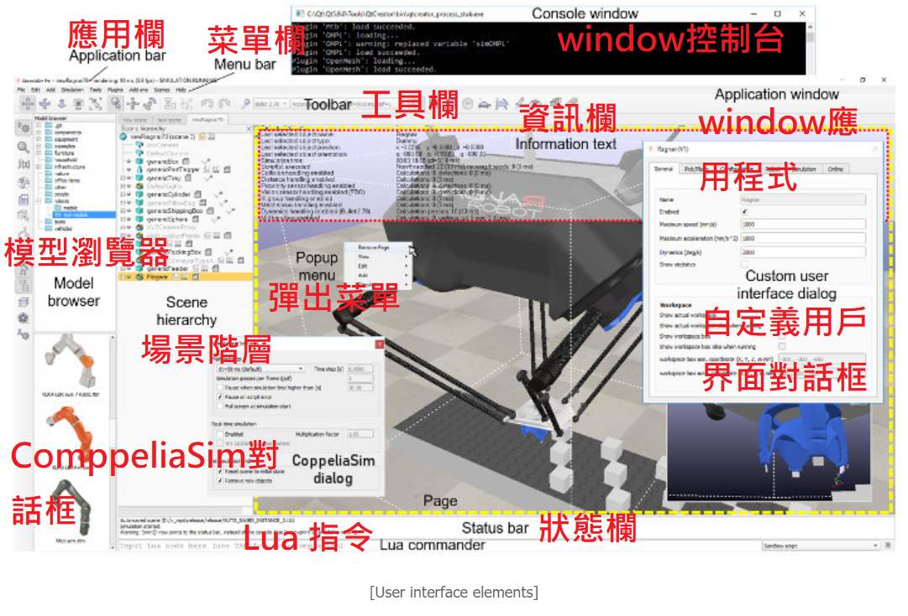
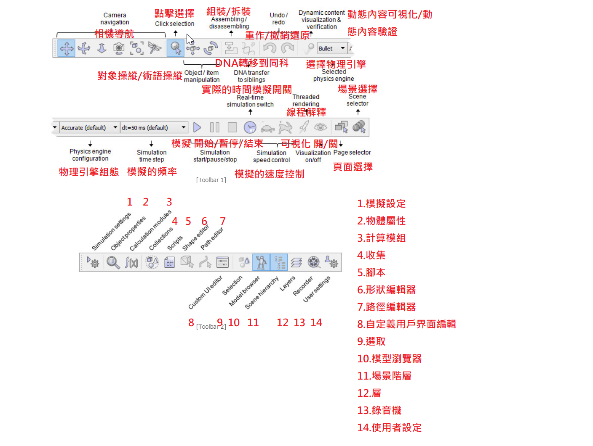
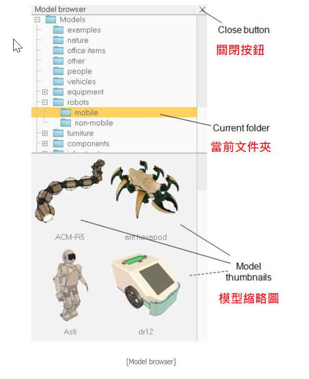
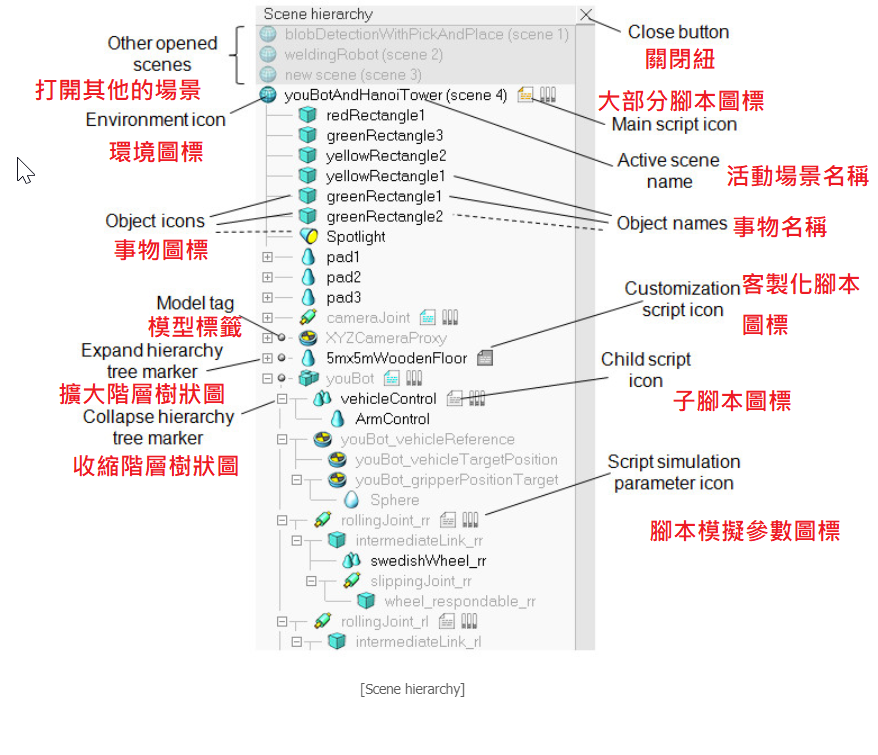

CoppeliaSim User Manual <<
Previous Next >> Scenes and models(場景和模型)
User interface(用戶界面)
The CoppeliaSim application is composed by several elements. Its main elements are:
CoppeliaSim應用程序由幾個元素組成。 它的主要元素是：
- a console window: under Windows, when the CoppeliaSim application starts, a console window is created but directly hidden again.
window控制台：在Windows下，當CoppeliaSim應用程式啟動時，會創建一個控制台窗口，但會直接將其隱藏。
- an application window: the application window is the application's main window. It is used to display, edit, simulate and interact with a scene.
window應用程式：應用程式窗口是應用程式的主窗口。它用於顯示、編輯模擬並與場景交互。
- several dialogs: next to the application window, the user can also edit and interact with a scene by adjusting dialog settings or parameters.
幾個對話框：在應用程序窗口旁邊，用戶還可以通過調整對話框的設置或參數來編輯和與場景進行交互。
Following illustrates a typical view of the CoppeliaSim application:
以下是CoppeliaSim應用程序的典型視圖：

When you launch the CoppeliaSim application, CoppeliaSim will initialized one default scene. The user is free to open several scenes in parallel.
In following section, a brief description will be given of the application window's elements.
當您啟動CoppeliaSim應用程序時，CoppeliaSim將初始化一個默認場景。 用戶可以自由地並行打開多個場景。
在下一節中，將簡要介紹上圖應用程序窗口的元素。
- application bar: the application bar indicates the type of license of your CoppeliaSim copy, the filename of the scene that is currently being displayed, the time used for one rendering pass (one display pass), and the simulator's current state (simulation state or type of the active edit mode). Supported files include "*.ttt"-files (CoppeliaSim scene files) and "*.ttm"-files (CoppeliaSim model files).
應用程序欄：應用程序欄指示您的CoppeliaSim副本的許可類型，當前正在顯示的場景的文件名，一次解釋過程（一次顯示過程）所用的時間以及模擬器的當前狀態（模擬狀態或活動活動類型的編輯模式）。支持的文件包括“ * .ttt”文件（CoppeliaSim場景文件）和“ * .ttm”文件（CoppeliaSim模型文件）。
- menu bar: the menu bar allows accessing almost all functionalities of the simulator. Most of the time, the items in the menu bar activate a dialog. The menu bar content is context-sensitive (i.e. it will depend on the current state of the simulator). Most functions in the menu bar can also alternatively be accessed through a popup menu, a double-click on an icon in the scene hierarchy view, or through a click of a toolbar button.
菜單欄：菜單欄允許進入模擬器的幾乎所有功能。 大多數時候，菜單欄中的項目會激活一個對話框。 菜單欄的內容是上下文相關的（即，它將取決於模擬器的當前狀態）。 也可以通過彈出菜單，或者雙擊場景階層視圖中的圖標又或者單擊工具欄按鈕來進入菜單欄中的大多數功能。
- toolbars: the toolbars present functions that are often accessed (e.g. changing the navigation mode, selecting another page, etc.). Some functions in toolbar 1, and all functions in toolbar 2 can also be accessed through the menu bar or popup menu. See further down for more details. Both toolbars can be docked and undocked, but docking works only with their respective initial positions. Following figure explains each toolbar button's function:
工具欄：工具欄提供經常進入的功能（例如，更改導航模式，選擇其他頁面等）。 工具欄1中的某些功能以及工具欄2中的所有功能也可以通過菜單欄或彈出菜單進入。 進一步了解更多細節。 這兩個工具欄都可以停靠任務和取消停靠任務，但是停靠任務僅適用於它們各自的初始位置。 下圖說明了每個工具欄按鈕的功能：

- model browser: the model browser is visible by default, but can be toggled with its corresponding toolbar button. It displays in its upper part a CoppeliaSim model folder structure, and in its lower part, thumbnails of models contained in the selected folder. Thumbnails can be dragged-and-dropped into the scene to automatically load the related model. Caught thumbnails appears dark if the drop area is not supported or not appropriate.
模型瀏覽器：默認情況下，模型瀏覽器是可見的，但可以使用其相應的工具欄按鈕進行切換。 它的上部顯示CoppeliaSim模型結構的文件夾，下部顯示所選文件夾中包含的模型縮略圖。 可以將縮略圖拖放到場景中以自動加載相關模型。 如果拖放區域不受支持或不合適，則捕獲的縮略圖將顯示為黑色。

- scene hierarchy: the scene hierarchy is visible by default, but can be toggled with its corresponding toolbar button. It displays the content of a scene (i.e. all scene objects composing a scene). Since scene objects are built in a hierarchy-like structure, the scene hierarchy displays a tree of this hierarchy, and individual elements can be expanded or collapsed. A double-click on an icon opens/closes a property dialog related to the clicked icon. A double-click on an object name allows editing it. The mouse wheel as well as a drag of the scene hierarchy view's scrollbars allows shifting the content up/down or left/right. Control and shift selection is always supported. Objects in the scene hierarchy can be dragged and dropped onto another object, in order to create a parent-child relationship. The scene hierarchy will display a different content if the simulator is in an edit-mode state. Refer to the shape edit modes, and the path edit mode for more information.
場景層次結構：默認情況下，場景層次結構是可見的，但可以使用其相應的工具欄按鈕進行切換。 它顯示場景的內容（即組成場景的所有場景對象）。 由於場景對像是按類似層次結構的結構構建的，因此場景層次結構將顯示此層次結構的樹狀圖，並且各個元素都可以展開或折疊。 雙擊圖標可打開/關閉與單擊的圖標相關的屬性對話框。 雙擊對象名稱可以對其進行編輯。 鼠標滾輪以及場景層次結構視圖的拖動允許向上/向下或向左/向右移動內容。 始終支持控制和換檔選擇。 可以將場景層次結構中的對象拖放到另一個對像上，以創建鄰接表模型。 如果模擬器處於編輯模式狀態，則場景層次將顯示不同的內容。 有關更多信息，請參考形狀編輯模式和路徑編輯模式。

- page: each scene may contain up to 8 pages, each of them may contain an unlimited number of views. A page can be seen as container for views. Refer to the pages and views section for more details.
頁面：每個場景最多可包含8個頁面，每個頁面可包含不限數量的視圖。可以將頁面視為視圖的容器。請參閱頁面和視圖部分以獲取更多詳細信息。
- views: there can be an unlimited number of views contained in a page. A view is used to display the scene (itself containing an environment and objects), seen through a viewable object (e.g. cameras, graphs or vision sensors).
視圖：頁面中可以包含無數個視圖。視圖用於顯示通過可見對象（例如攝像機，圖形或視覺傳感器）看到的場景（本身包含環境和對象）。
- information text: the information text displays information related to current object/item selection and to running simulation states or parameters. The text display can be toggled with one of the two small buttons on the upper left side of a page. The other button can be used to toggle a white background, giving a better contrast depending on the background color of a scene.
信息文本：信息文本顯示與當前對象/項目選擇以及運行模擬狀態或參數有關的信息。可以使用頁面左上方的兩個小按鈕之一來切換文本顯示。另一個按鈕可用於切換白色背景，根據場景的背景顏色提供更好的對比度。
- status bar: the status bar displays information related to performed operations, commands, and also displays error messages from the Lua interpreter. From within a script the user can also output strings to the status bar with the sim.addStatusbarMessage function. The status bar displays only two lines by default, but it can be resized using its horizontal separation handle.
狀態欄：狀態欄顯示與執行的操作，命令有關的信息，還顯示來自Lua解釋器的錯誤消息。用戶還可以從腳本中使用 (sim.addStatusbarMessage) 函數將字符串輸出到狀態欄。默認情況下，狀態欄僅顯示兩行，但可以使用其水平分隔手柄調整其大小。
- Lua commander: a read-eval-print loop, that adds a text input to the CoppeliaSim status bar, allowing to enter and execute Lua code on the fly, like in a terminal. The code can be run in the sandbox script, or any other active script in CoppeliaSim.
Lua指令：一個讀-評估-打印循環，它將文本輸入添加到CoppeliaSim狀態欄，從而可以像在終端機中一樣快速輸入和執行Lua代碼。該代碼可以在沙盒腳本或CoppeliaSim中的任何其他活動腳本中運行。
- custom user interfaces: custom user interfaces are user-defined UI surfaces that can be used to display information (text, images, etc.) or a custom dialog, allowing to interact with the user in a customized way.
自定義用戶界面：自定義用戶界面是用戶定義的UI表面，可用於顯示信息（文本，圖像等）或自定義對話框，從而允許以自定義方式與用戶進行交互。
- popup menu: popup menus are the menus that appear after a right mouse button click. To activate a popup menu, make sure the mouse doesn't move during the click operation, otherwise the camera rotation mode may be activated (see the camera section for more details). Each surface within the application window (e.g. scene hierarchy view, page, view, etc.) may trigger a different popup menu (context-sensitive). The content of popup menus may also change depending on the current simulation state or edit mode. Most popup menu function can also be accessed through the menu bar, except for the view-menu item that only appears when the popup menu is activated on a view or page.
彈出菜單：彈出菜單是單擊鼠標右鍵後出現的菜單。要激活彈出菜單，請確保在單擊操作期間鼠標沒有移動，否則可能會激活相機旋轉模式（有關更多詳細信息，請參見相機部分）。應用程序窗口內的每個表面（例如，場景層次視圖，頁面，視圖等）可能會觸發不同的彈出菜單（上下文相關）。彈出菜單的內容可能根據當前的模擬狀態或編輯模式而改變。除了僅在視圖或頁面上激活彈出菜單時才會顯示的視圖菜單項，大多數彈出菜單功能也可以通過菜單欄進入。
CoppeliaSim User Manual <<
Previous Next >> Scenes and models(場景和模型)